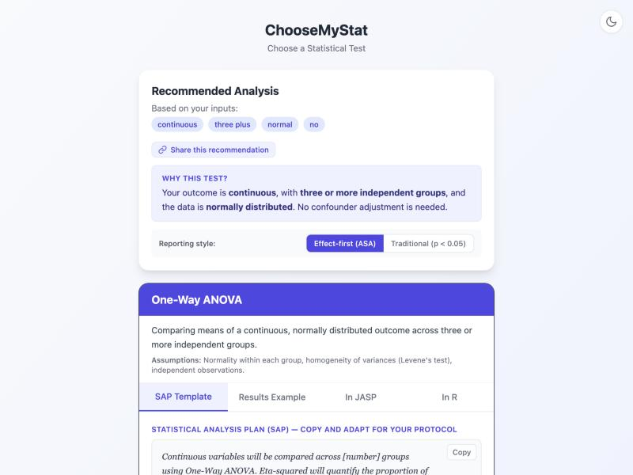

Comparing HbA1c Across Three
Diabetes Management Regimens
One-Way ANOVA
Walk through ChooseMyStat to choose the right test and calculate the sample size for comparing HbA1c reduction across three oral hypoglycaemic regimens.
Study Scenario
Dr. Kulkarni, an endocrinologist at a medical college hospital, is designing a randomised trial comparing HbA1c reduction across three oral hypoglycaemic regimens in newly diagnosed T2DM patients:
- Group 1: Metformin monotherapy (standard care)
- Group 2: Metformin + Glimepiride (sulphonylurea combination)
- Group 3: Metformin + Vildagliptin (DPP-4 inhibitor combination)
Based on head-to-head trials in Indian populations (e.g., Bose et al. 2014, Kalra et al. 2015), the expected effect size is moderate — Cohen's f ≈ 0.30, corresponding to η² ≈ 0.08. The primary outcome is change in HbA1c (%) from baseline to 24 weeks.
- Outcome: Change in HbA1c (%) from baseline to 24 weeks — continuous
- Design: Three independent parallel groups (randomised)
- Expected effect size: Cohen's f = 0.30 (η² = 0.08)
- Significance level (α): 0.05
- Power: 80%
Open the App and Choose a Pathway
Go to choose-my-stat.vercel.app and click "Choose a Statistical Test".
Since we are comparing a continuous outcome across three groups, the "Comparing Groups / Before-After" pathway is the correct choice. This pathway covers t-tests (2 groups), ANOVA (3+ groups), and their non-parametric counterparts.
Step 1 in the App: Outcome Type
The first question: "What type of outcome variable are you measuring?"
Our outcome is change in HbA1c (%), a continuous variable measured on a ratio scale. Values like −1.2%, −0.8%, −1.5% represent the reduction in HbA1c from baseline to 24 weeks.

Step 2 in the App: Comparison Structure
Next: "What is the structure of your comparison?"
We have three independent groups (Metformin alone, Metformin + Glimepiride, Metformin + Vildagliptin). Each patient is randomised to one group only — there is no crossover or repeated measurement across groups.
Step 3 in the App: Distribution
The app asks: "Are the data approximately normally distributed?"
HbA1c change scores in moderate-sized clinical samples (n ≥ 30 per group) are generally approximately normally distributed. With planned sample sizes of ~37 per group, the central limit theorem provides additional assurance. We can reasonably assume normality.
Step 4 in the App: Confounders
The app asks: "Do you need to adjust for confounders or covariates?"
In a well-designed randomised trial, randomisation should balance known and unknown confounders across groups. For the primary analysis of this trial, Dr. Kulkarni plans a simple unadjusted comparison of HbA1c change across the three arms.
The Result: One-Way ANOVA Recommended
The app recommends One-Way ANOVA (Analysis of Variance) — the correct test for comparing means across three or more independent groups when the data are approximately normally distributed.

Understanding the ANOVA Result
ANOVA tests the omnibus null hypothesis: "All three group means are equal" (H0: μ1 = μ2 = μ3). If the F-test is significant (p < 0.05), it tells you that at least one group differs, but not which one.
To determine which specific groups differ from each other, you need post-hoc pairwise comparisons. Common choices include:
• Tukey's HSD — controls the family-wise error rate; best when comparing all pairs
• Bonferroni correction — more conservative; divides α by the number of comparisons
• Dunnett's test — when comparing each treatment group against a single control (e.g., Metformin monotherapy)
Sample Size Calculation
The sample size for one-way ANOVA depends on the effect size (Cohen's f), the number of groups, the significance level, and the desired power.
Cohen's f and Eta-Squared (η²)
Cohen's f is related to η² (eta-squared, the proportion of variance explained by the group factor) by: f = √(η² / (1 − η²))
Cohen's benchmarks: f = 0.10 (small, η² = 0.01), f = 0.25 (medium, η² = 0.06), f = 0.40 (large, η² = 0.14).
Our expected f = 0.30 corresponds to η² = 0.30² / (1 + 0.30²) = 0.09 / 1.09 ≈ 0.08, meaning the drug regimen explains about 8% of the variance in HbA1c change.
Parameters for sample size calculation:
| Parameter | Value | Why? |
|---|---|---|
| Number of groups (k) | 3 | Metformin alone, Met + Glimepiride, Met + Vildagliptin |
| Effect size (Cohen's f) | 0.30 | Moderate effect from head-to-head trials (Bose et al. 2014, Kalra et al. 2015) |
| Alpha (α) | 0.05 | Standard 5% significance level |
| Power (1 − β) | 80% | Conventional power for clinical trials |
| Dropout | 15% | 24-week trial with three arms — higher dropout expected |
Sample Size Result
Using G*Power or standard ANOVA power tables with k = 3, f = 0.30, α = 0.05, power = 80%:
You need 37 patients per group (111 total) to detect a moderate effect of f = 0.30 with 80% power. After adding 15% to account for dropout over the 24-week trial, you should recruit approximately 44 patients per group (131 total).
What You Get from ChooseMyStat
ChooseMyStat provides several ready-to-use outputs for your trial protocol or thesis:
SAP Template
A pre-written paragraph describing your ANOVA analysis plan, including assumptions, post-hoc tests, and sample size justification.
Results Example
A template showing how to report ANOVA results (F-statistic, df, p-value, η²) and post-hoc pairwise comparisons with adjusted p-values.
R Code
Ready-to-run R code for performing one-way ANOVA, checking assumptions (Levene's test for homogeneity, Shapiro-Wilk for normality), and running Tukey's HSD post-hoc test.
G*Power Instructions
Step-by-step instructions for verifying your sample size in G*Power using the "ANOVA: Fixed effects, omnibus, one-way" test family.
Key Takeaways
- Cohen's f vs. η² — know both: Journals and textbooks use both effect size measures interchangeably. Cohen's f is the input for G*Power sample size calculations, while η² (or partial η²) is reported in results tables. They are related by f = √(η² / (1 − η²)). Always specify which one you are reporting.
- ANOVA tells you "something differs" but not "what": A significant F-test only rejects the omnibus null hypothesis. You must follow up with post-hoc pairwise comparisons (Tukey, Bonferroni, or Dunnett) to identify which specific groups differ. Never stop at the ANOVA p-value.
- When to use Kruskal-Wallis instead: If the data are heavily skewed or sample sizes are very small, use the Kruskal-Wallis test (non-parametric ANOVA alternative). Follow up with Dunn's test for post-hoc pairwise comparisons.
- Consider ANCOVA when baseline differs: Even in a randomised trial, baseline HbA1c may differ across groups by chance. ANCOVA adjusts for this baseline difference and typically provides a more powerful analysis. Many trial statisticians recommend pre-specifying ANCOVA with baseline as a covariate, even if randomisation is expected to balance groups.
- Check ANOVA assumptions: One-way ANOVA assumes (a) independence of observations, (b) approximately normal residuals within each group, and (c) homogeneity of variances across groups (check with Levene's test). If variances differ substantially, use Welch's ANOVA, which does not assume equal variances.
Ready to find the right test for your study?
Try ChooseMyStat Yourself